The general approach and the history first, then each part of the exam in the order you do it: what to look for, each manoeuvre grouped under what it tests (numbered steps and what counts as positive), and its pearls. Built from the course objectives; anything only the PoM 1 Respirology session teaches is tagged later. Each side of the chest goes inspect, palpate, percuss, auscultate, always comparing left with right.
Look: everything shown. Pick a region below to jump to it.
General inspection → Posterior chest → Anterior chest → Finish
Inspect, palpate, percuss, auscultate; compare left with right at the same level, and cover every lung field from apex to base. The right middle lobe can only be reached from the front.
General approach
Every respiratory exam
The general approach
Say it first (TOSCE): "Hello, I'm ___, a medical student. Can I check your name and age? I'd like to examine your chest and lungs, which means looking, feeling, tapping and listening on your back and front. Is that alright?" Then wash your hands (15 seconds), clean the stethoscope, and put on any protective equipment needed.
Position and draping: patient sitting on the exam table so you can reach the back; untie the gown at the back and keep the patient comfortable and properly draped (especially for the front of the chest)
Ask for the vitals: heart rate, blood pressure, respiratory rate, temperature, oxygen saturation (SpO2)
Inspect: distress first, then hands, face, neck and chest shape
Palpate: trachea, spine and renal angles, chest expansion, tactile fremitus
Percuss: all lung fields, side to side
Auscultate: all lung fields, side to side, plus the voice tests if something sounds abnormal
Surface anatomy (recognise the anterior and posterior landmarks): the right lung has three lobes (upper, middle, lower), the left has two (upper, lower); the right middle lobe lies between the right 4th and 6th ribs and is only examined from the front
fissure landmarks: horizontal fissure at the 4th rib; oblique fissure at the 5th rib in the mid-axillary line and the 6th rib in the mid-clavicular lineextra
Tap to reveal
Before you examine: the respiratory history
An organized, patient-centred history comes first later: PoM 1 Respirology
History of the presenting illness: OPQRST (Onset, Provocation, Quality, Region/Radiation, Severity, Timing)
The six cardinal respiratory symptoms, asked about if not already covered: cough, sputum, hemoptysis (coughing up blood), chest pain, dyspnea (shortness of breath), wheezing; also pain or difficulty swallowing
Past history: current or past illnesses, hospitalizations, surgeries · medications and allergies · family health
Social history: occupation (any exposure to chemicals?), family relationships and friends, alcohol, smoking, drugs, diet and exercise, recent travel, sick contacts
Review of systems: headaches, vision and hearing, palpitations, weight loss, muscle aches, night sweats, mood
Then a differential diagnosis and a first management plan from the history and findings later: PoM 1 Respirology
Tap to reveal
General inspection
PPES 1 · Week 2 · 5 manoeuvres
What to do
Before the manoeuvres
Signs of respiratory distress first, while you take the history and throughout
peripheral cyanosis: cool, bluish fingers and toes
anemia (pale nail beds and palm creases)
clubbing and asterixis (table)
splinter haemorrhages (thin red-brown lines under the nails) and capillary refill (table) extra
thenar and hypothenar wasting (thinning of the thumb and little-finger pads of the palm) later: PoM 1 Respirology
Eyes and mouth
conjunctival pallor
central cyanosis: look under the tonguelater: PoM 1 Respirology
Horner's syndrome: a drooping eyelid (ptosis) and a small pupil on one side, which can come from a tumour at the lung apex (Pancoast tumour) later: PoM 1 Respirology
Necklater: PoM 1 Respirology
ask the patient to speak: a hoarse voice may mean the recurrent laryngeal nerve is damaged
palpate the cervical and supraclavicular lymph nodes for enlarged nodes
trachea position (table)
Tap to reveal
Hands: chronic lung disease
Clubbing (Schamroth sign)
Chronic lung disease (also heart and gut disease)
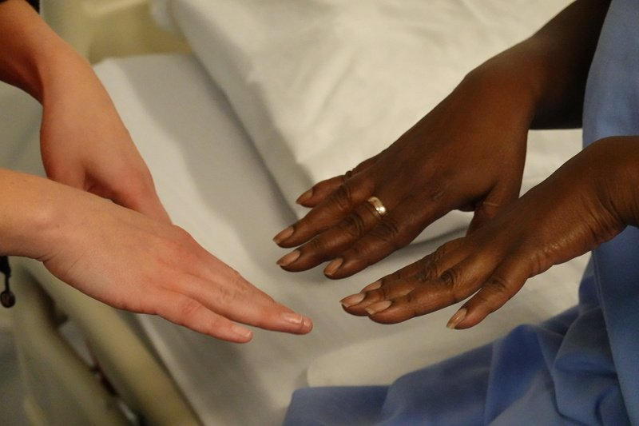
Steps
Ask the patient to put the backs of the two index fingertips together, nail to nail
Look for the small diamond-shaped window between the nails
Positive
Diamond window lost · early clubbing: soft, spongy nail bed (normal: a diamond-shaped gap)
Tap to reveal
Asterixis
CO2 retention (too much carbon dioxide in the blood) or liver failure (encephalopathy)
Steps
Arms straight out in front
Bend the wrists back, like stopping traffic
Hold for a few seconds
Positive
Flapping tremor of the hands
Tap to reveal
Capillary refill
Poor perfusion (blood flow to the fingers) extra
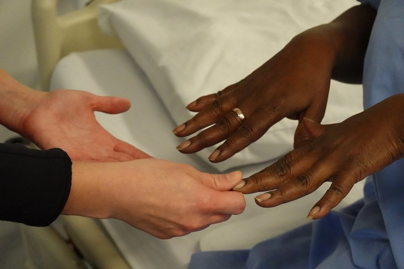
Steps
Hold the patient's hand at about heart level
Press a fingernail firmly for 5 seconds until the nail bed goes pale
Let go and count how long the pink returns
Positive
Colour takes longer than 2 seconds to return (normal: under 2 seconds)
Tap to reveal
Neck: what is pushing or pulling
Tracheal position
Something pulling or pushing the trachea
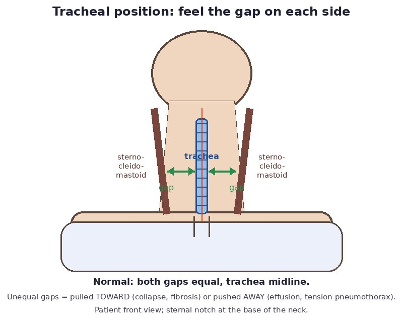
Steps
Inspect first: is the trachea midline?
Place your fingers along one side of the trachea and feel the space between it and the sternocleidomastoid muscle
Enlarged nodes (lymphadenopathy): infection, or a lung cancer that has spread later: Respirology
Steps
Patient sitting, you in front or behind
With the pads of two or three fingers, roll gently over the neck chains (in front of and behind the sternocleidomastoid, under the jaw, behind the ear)
Then press into the hollow above each collarbone (supraclavicular)
Compare both sides
Positive
Enlarged, firm or fixed nodes, especially above the collarbone (normal: not palpable, or small, soft and mobile)
Tap to reveal
Pearls
Remember
*"Trachea is midline. No clubbing, cyanosis or asterixis."*
Tap to reveal
Chest inspection
PPES 1 · Week 2 · 2 manoeuvres
What to do
Before the manoeuvres
Inspect the skin and the thorax for shape, respiratory movements and muscle wasting, front and back
Shape: compare the front-to-back (AP) diameter with the side-to-side diameter
barrel chest (front-to-back as wide as side-to-side) → hyperinflation, e.g. chronic obstructive pulmonary disease (COPD)
kyphosis (rounded upper back) · scoliosis (sideways curve of the spine)
Symmetry: ask for a few deep breaths and watch for one side lagging
Accessory muscle use during breathing (front of the chest and neck)
Back: symmetry, scars, skin changes, kyphoscoliosis, other deformities; ask about tender areas
SEADS checklist for the skin and chest wall: Swelling (including edema), Erythema (redness), Atrophy (muscle wasting), Deformities, Scars (including surgical scars)
Tap to reveal
Shape and movement
Chest shape and skin (SEADS)
Deformity or hyperinflation, scars, skin change
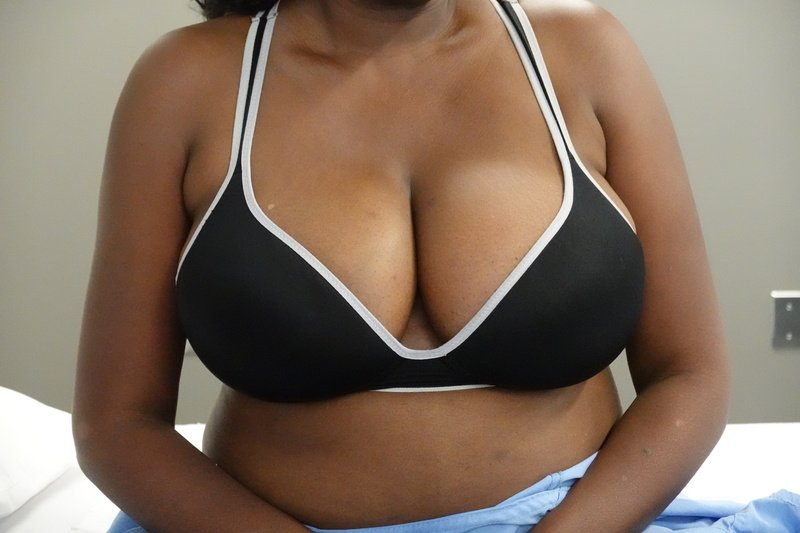
Steps
Look at the whole chest from the front, the side and the back
Compare the front-to-back (AP) diameter with the side-to-side one
Run through SEADS: swelling, erythema, atrophy, deformities, scars
Positive
Barrel chest (AP as wide as side-to-side) · pectus excavatum or carinatum · kyphosis or scoliosis · scars or wasting (normal: AP narrower than side-to-side, no deformity)
Tap to reveal
Respiratory movement and accessory muscles
Work of breathing; one side not moving
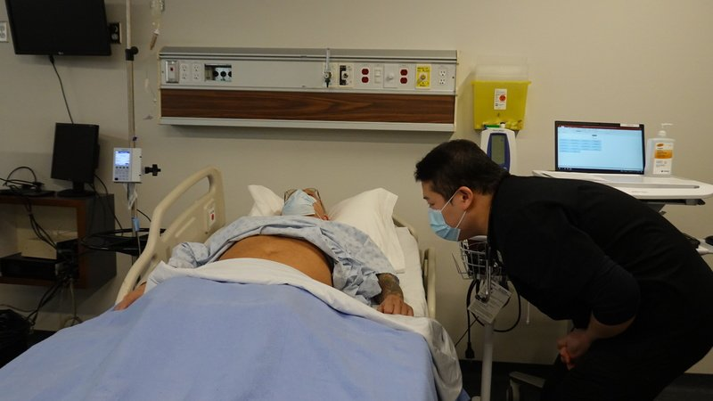
Steps
Ask for a few deep breaths
Watch both sides together for one side lagging
Look at the neck and between the ribs for accessory muscle use
Positive
One side lags · neck muscles contract or skin sucks in between the ribs (normal: both sides rise together, no accessory muscles at rest)
Tap to reveal
Palpation
PPES 1 · Week 2 · 3 manoeuvres
What to do
Before the manoeuvres
Patient sitting, arms crossed over the chest (moves the shoulder blades out of the way)
Palpate the posterior chest wall, spine and renal angles for tenderness, then chest expansion and tactile fremitus
Tap to reveal
Tenderness
Spine and renal angle tenderness
Bone or kidney problem
Steps
Warn the patient
With the side of your fist, gently thump down the spinous processes
Then each renal angle (where the lowest rib meets the back muscles)
Hands on the lower back at the level of the 10th ribs
Slide thumbs toward the spine, raising a loose fold of skin between them
Ask for a deep breath
Watch your thumbs
Positive
Thumbs move apart unequally, or barely at all (normal: equal, symmetrical movement)
Tap to reveal
Tactile fremitus
What lies under the chest wall: solid, fluid or air
Steps
Arms crossed
Use the ball of the palm or the ulnar (little-finger) edge of one hand
Patient says "ninety-nine" or "boy-oh-boy" each time you touch
Work down the back side to side, comparing matching spots
Positive
Increased: consolidation (pneumonia) · decreased on one side: atelectasis, pleural effusion, pneumothorax · decreased both sides: COPD, effusions on both sides (normal: equal on both sides; strongest between the shoulder blades)
Tap to reveal
Pearls
Remember
*"No spinal or renal angle tenderness. Chest expansion is symmetrical. Tactile fremitus is equal bilaterally."*
Tap to reveal
Percussion
PPES 1 · Week 2 · 2 manoeuvres
What to do
Before the manoeuvres
Percuss and compare the left and right lung fields for dullness or hyperresonance, including the apices, in the same spots as tactile fremitus (about six levels each side), arms still crossed
Percussion tells you whether the tissue underneath is air-filled, fluid-filled or solid; normal lung is resonant
Percuss over the spaces between the ribs, not over bone
Tap to reveal
Air, fluid or solid?
Percussing a lung field
Air vs fluid vs solid under that spot
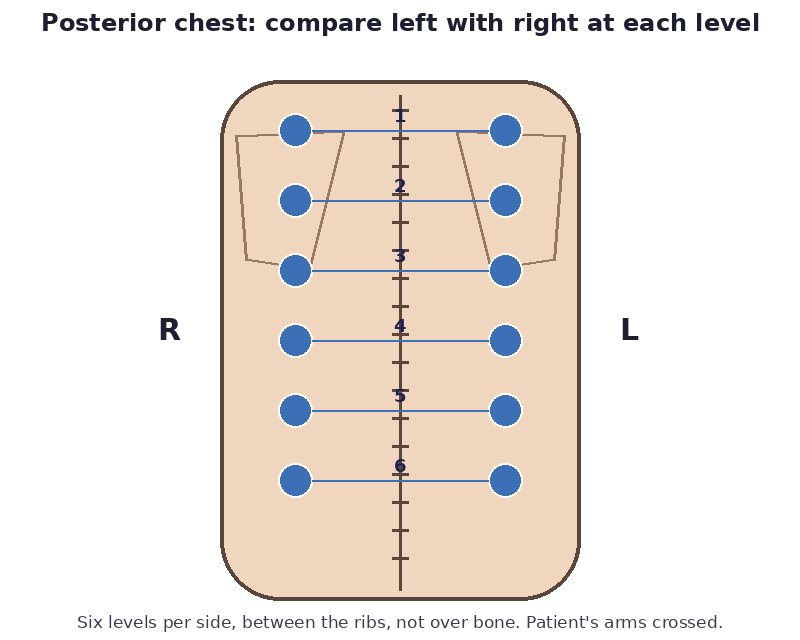
Steps
Press the middle finger of your non-dominant hand firmly on the chest, only its last joint (DIP) touching
With the tip of your dominant middle finger, strike that joint twice, a quick relaxed flick from the wrist
Pull back at once so you don't damp the sound
Same level on the other side, then move down
Positive
Dull / flat or hyperresonant / tympanic (table below) (normal: resonant, equal both sides)
Tap to reveal
Diaphragm
Diaphragmatic excursion
How far the diaphragm moves
Steps
Patient breathes all the way out and holds: percuss down to where resonance turns dull; mark it
Patient breathes all the way in and holds: find the new level; mark it
Measure between the marks
Positive
Reduced movement (normal: 3-5 cm; 7-8 cm can be normal in a well-conditioned person) later: PoM 1 Respirology
Tap to reveal
Pearls
Remember
Percussion notes and their causes (with an everyday example of the sound):
hyperresonant (no normal example) → emphysema, pneumothorax, asthma
tympanic (like a puffed-out cheek) → large pneumothorax
*"Percussion is resonant throughout and symmetrical."*
Tap to reveal
Auscultation
PPES 1 · Week 2 · 3 manoeuvres
What to do
Before the manoeuvres
Listen over the posterior and lateral lung fields for the intensity and character of the breath sounds and for adventitious (extra) sounds: crackles and wheezes, covering every lung field from apex to base
Arms crossed; breathe deeply through an open mouth; ask the patient to say if they feel light-headed
Use the diaphragm (lung sounds are high-pitched); go side to side in the same pattern as percussion
Note the intensity, pitch and the relative length of breathing in and out
Breath sounds
vesicular (normal, over most of the lung): soft, low-pitched rustling; breathing in lasts longer than breathing out
bronchovesicular: in and out about equal; heard near the 1st-2nd spaces at the front and between the shoulder blades
bronchial: louder, higher-pitched, breathing out lasts longer; normal only over the manubrium (top of the sternum); heard over the lung = consolidation or dense fibrosis
tracheal: very loud and harsh, over the trachea in the neck
decreased breath sounds: something blocks the air (atelectasis) or sits between the lung and the stethoscope (effusion, pneumothorax)
Adventitious sounds: crackles (fluid or secretions, e.g. pneumonia, pulmonary edema), wheezes (narrowed airway: obstruction)
Voice tests: used when consolidation is suspected (table)
Tap to reveal
Breath sounds
Auscultating a lung field
Intensity and character of breath sounds, and extra sounds
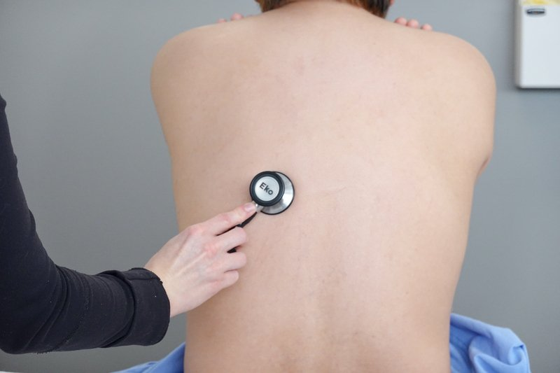
Steps
Patient sits, arms crossed, and breathes deeply through an open mouth
Diaphragm of the stethoscope on bare skin between the ribs
Listen to a full breath in and out at each spot
Go side to side at the same level, apex to base (about 6 levels each side)
Positive
Bronchial sounds over the lung, decreased breath sounds, crackles or wheezes (normal: vesicular, equal both sides)
Tap to reveal
Voice tests for consolidation
Egophony
Consolidation
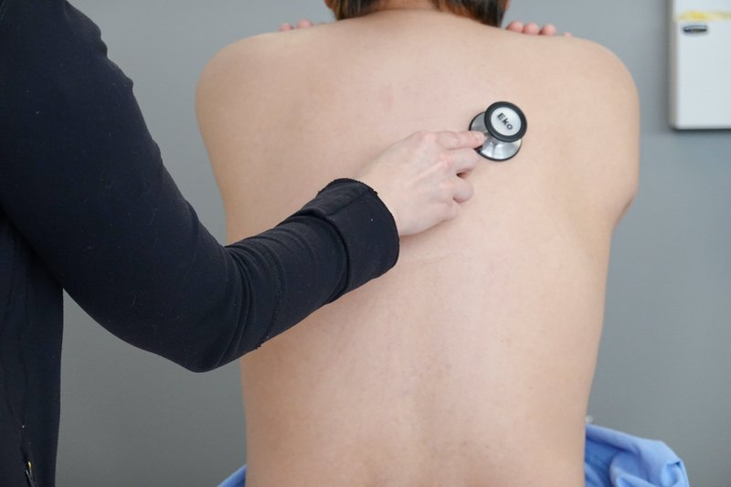
Steps
Stethoscope over the suspicious area
Patient says "eee"
Positive
"eee" sounds like "aaa" (normal: "eee" stays "eee")
Tap to reveal
Whispered pectoriloquy
Consolidation
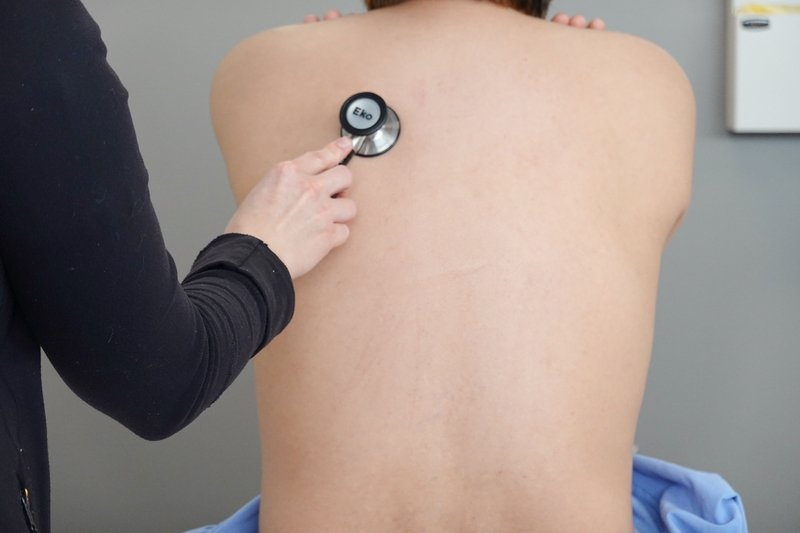
Steps
Stethoscope over the suspicious area
Patient whispers "one, two, three"
Positive
Whisper heard loud and clear (normal: faint and muffled)
Tap to reveal
Pearls
Remember
*"Vesicular breath sounds bilaterally, with no crackles or wheezes. Egophony and whispered pectoriloquy negative."*
Tap to reveal
Anterior chest
PPES 1 · Week 2 · 3 manoeuvres
What to do
Before the manoeuvres
Examined the same way as the back: inspect, palpate, percuss, auscultate, side to side
Position: the Week 2 page says lying back (supine); the Respirology objective says sitting. ⚠ Drape carefully, especially for female patients
Inspect for respiratory movement and accessory muscle use (sternocleidomastoids, retractions between the ribs)
Palpate: trachea again, chest expansion along the costal margins (lower rib edges), tactile fremitus; feel the clavicles, sternum and costal margins
Percuss the anterior lung fields for dullness or hyperresonance: above and below the clavicles, down the 2nd-4th spaces in the mid-clavicular line, and the lower chest in the anterior axillary line (about five spots each side)
Auscultate the anterior and lateral lung fields for breath sounds and adventitious sounds, at the same spots
Tap to reveal
Front lung fields
Anterior percussion
Air vs fluid vs solid in the front lung fields
Steps
Same finger technique as the back
Start above and below the clavicles
Move down the 2nd-4th spaces in the mid-clavicular line, then the lower chest in the anterior axillary line (about 5 spots each side)
Compare each spot with the same level on the other side
Positive
Dull or hyperresonant (normal: resonant, equal both sides)
Tap to reveal
Anterior auscultation
Intensity and character of breath sounds, extra sounds
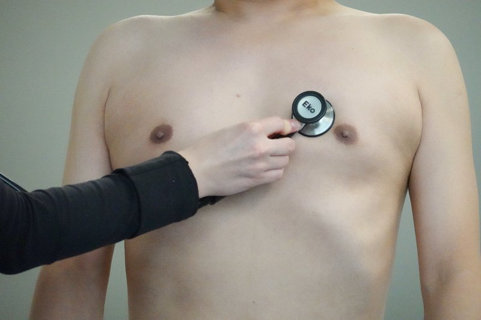
Steps
Diaphragm of the stethoscope on bare skin, patient breathing deeply through an open mouth
Same spots as percussion, side to side
Listen to a full breath in and out at each spot
Positive
Bronchial sounds over the lung, decreased breath sounds, crackles or wheezes (normal: vesicular)
Tap to reveal
Right middle lobe
A lobe you cannot reach from the back
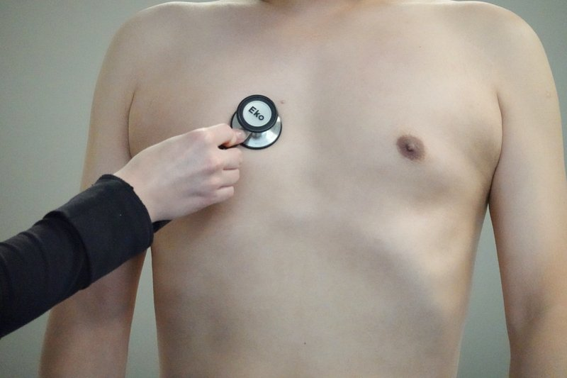
Steps
Find the right 4th-6th ribs, between the mid-clavicular and anterior axillary lines
Percuss there, then auscultate there
Positive
Dull, or crackles or bronchial breathing (normal: resonant and vesicular)
Tap to reveal
Pearls
Remember
⚠ The right middle lobe is best assessed anteriorly: right 4th-6th rib, between the mid-clavicular and anterior axillary lines. Don't skip it.
Tap to reveal
Putting it together
PoM 1 · Respirology
What to do
Before the manoeuvres
Recognise the findings of the four cardinal processeslater: PoM 1 Respirology
Consolidation (pneumonia: the air spaces fill with fluid or pus)
*"Findings are consistent with consolidation at the right base: dull to percussion, increased fremitus, bronchial breath sounds with crackles, and positive egophony."*
Tap to reveal
Finishing the exam
PoM 1 · Respirology · 2 manoeuvres
What to do
Before the manoeuvres
Examine the upper limb for clubbing (section 3) and the lower limbs for peripheral edema (patient sitting or standing) later: PoM 1 Respirology
Tap to reveal
Hands and legs
Clubbing (upper limb)
Chronic lung disease
Steps
Patient sitting or standing, both hands in view
Schamroth sign: put the backs of the two index fingertips together, nail to nail
Look for the diamond-shaped window and feel for a spongy nail bed
Positive
Diamond window lost (normal: a diamond-shaped gap)
Tap to reveal
Pitting edema (lower limbs)
Fluid in the legs: right-sided heart failure, which lung disease can cause
Steps
Patient sitting or standing, look at both ankles and shins
Press a thumb firmly over the inner shin bone (tibia) or behind the ankle bone for about 5 seconds
Let go and look for a dent
Compare both legs
Positive
A dent that stays (pitting), one or both sides (normal: skin springs back at once)
Tap to reveal
Pearls
Remember
Close with: *"If I had further concerns, I would also perform a cardiovascular exam"* (the heart can cause or follow lung disease: look at the jugular venous pressure, liver, ascites, leg swelling, and the calves for a clot)
⚠ A trachea pushed away with a hyperresonant, silent side in a distressed patient is a tension pneumothorax until proven otherwise.
Tap to reveal
Videos
Videos and most photos from the Health Education Media Library (Western Libraries; Schulich School of Medicine and Dentistry), CC BY-NC 4.0, played from the library's own server. Each opens only when you tap it.
Image credits
Images reused under their open licences (Creative Commons or public domain). Some were cropped to hide faces.
Clubbing (Schamroth sign): Schulich School of Medicine and Dentistry (Health Education Media Library, Western Libraries), CC BY-NC 4.0, source
Capillary refill: Schulich School of Medicine and Dentistry (Health Education Media Library, Western Libraries), CC BY-NC 4.0, source
Chest shape and skin (SEADS): Schulich School of Medicine and Dentistry (Health Education Media Library, Western Libraries), CC BY-NC 4.0, source
Respiratory movement and accessory muscles: Schulich School of Medicine and Dentistry (Health Education Media Library, Western Libraries), CC BY-NC 4.0, source
Auscultating a lung field: Schulich School of Medicine and Dentistry (Health Education Media Library, Western Libraries), CC BY-NC 4.0, source
Egophony: Schulich School of Medicine and Dentistry (Health Education Media Library, Western Libraries), CC BY-NC 4.0, source
Whispered pectoriloquy: Schulich School of Medicine and Dentistry (Health Education Media Library, Western Libraries), CC BY-NC 4.0, source
Anterior auscultation: Schulich School of Medicine and Dentistry (Health Education Media Library, Western Libraries), CC BY-NC 4.0, source
Right middle lobe: Schulich School of Medicine and Dentistry (Health Education Media Library, Western Libraries), CC BY-NC 4.0, source
Pitting edema (lower limbs): Schulich School of Medicine and Dentistry (Health Education Media Library, Western Libraries), CC BY-NC 4.0, source
Percussing a lung field: Drawn for this page (Noor Simsam), CC0 (own drawing), source
Chest expansion: Drawn for this page (Noor Simsam), CC0 (own drawing), source
Tracheal position: Drawn for this page (Noor Simsam), CC0 (own drawing), source